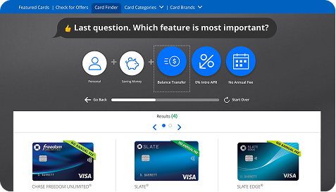
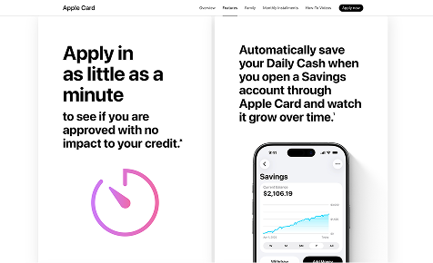
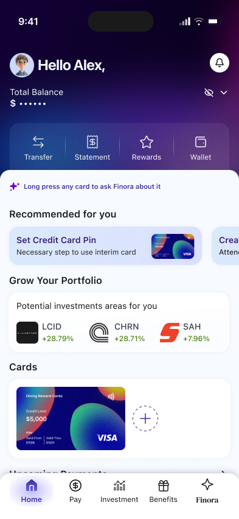
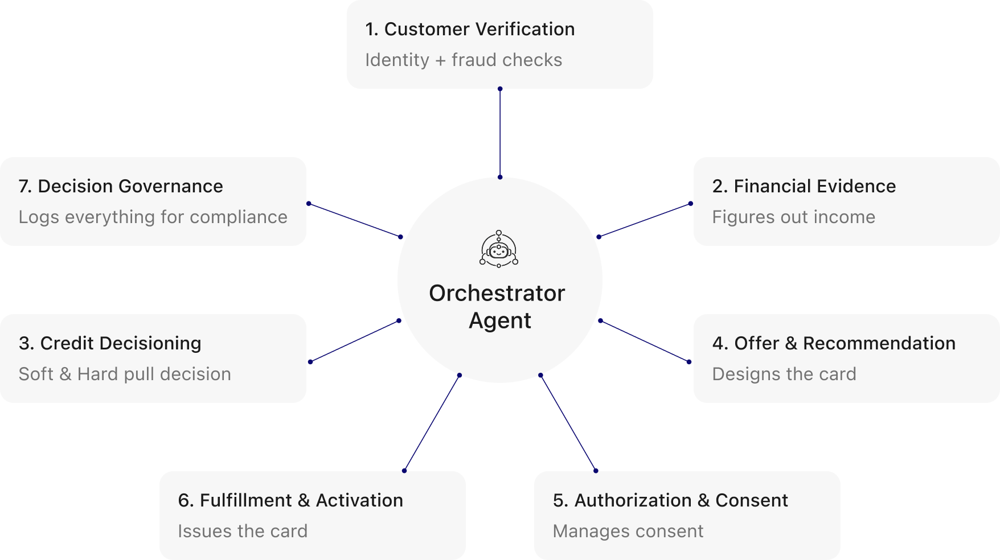
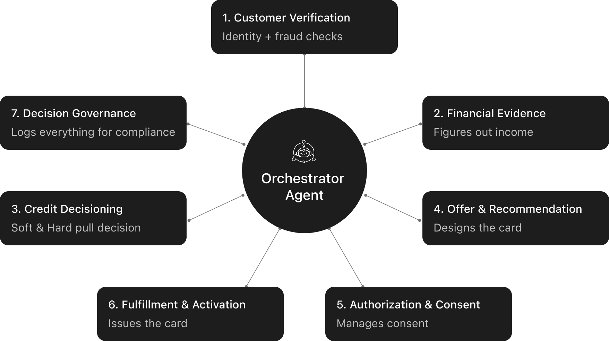

Reimagining credit card onboarding as an adaptive, agentic experience.
Industry
Financial Services
Timeline
2 weeks (summer internship)
Methods
Agentic Adaptive UI . Systems Mapping . UX . Prototyping
Ever felt overwhelmed while applying for a credit card?
Project overview
This project explores how credit-card applications can be simplified. From card discovery to applying and progress tracking, it introduces an agentic experience that adapts to user’s needs.
My role
Designed the core activation gesture to interact with the AI. My work extended from researching adaptive interfaces and credit card processes to building high-fidelity UI and prototype.
Problem
Traditional credit onboarding overwhelms users with a catalogue of cards without personal context, followed by an opaque review process with no clear next steps.
Decision fatigue
Pending application status
Lack of context
Competitor analysis
To identify gaps in the existing credit journeys, I evaluated leading US banking onboarding flows.
5Competitors
Strengths
Chances for fast approvals
Soft-pull pre-qualification
Native digital wallet integration
1 offers behaviour-based personalisation
Weaknesses
Large, static card catalogues
Lack personalised recommendation
AI features exist in isolation
Opaque application status tracking

Current recommendations offer minimal customisation to users.

Transparent pre-approvals significantly reduce user anxiety.
Moving beyond static screens, I explored agentic interfaces that adapt to user intent and anticipate their needs.
How can it benefit a financial interface?
Using financial context like spending behaviour and goals to make personalised recommendations and screen flows.
Drawback
Loss of Spatial Predictability: Changing layouts can disrupt learned patterns.
How it was addressed
The banking dashboard remains stable while AI workflows appear in floating windows.
Solution
Finora: An agent that simplifies complex banking journeys through intelligent guidance, automation, and proactive support.
What makes Finora different?
Built around four principles
Hyper-personalized Dashboard
Multitasking: Floating AI Windows
Proactive AI Recommendations
Adaptive Agentic UI
User flow 1
1
Long press anywhere on screen to activate Finora
Long-press any element to ask Finora without leaving the current context.
2
Transparent agent actions before the result.
After a prompt, the action log shows what the agents do in the background.
3
Interface adapts to the user’s query
Finora generates the relevant screens based on the user's request.
4
Skip repetitive form filling.
Relevant information is pre-filled from available financial context. The user only needs to review and verify.
5
Recommendations shaped around how the user spends.
Eg:Dining-focused rewards surfaced based on spending behaviour.
6
Consent before the hard pull
Upon selecting card, hard credit inquiry is required and can affect credit score.
7
Card can be approved in under 60 secs
If all documents are in order, automated underwriting approves card request.
8
Card approved in 40 secs
Once approved, the user gets confirmation that their physical card has been issued.
9
Receive an online interim card before the physical card arrives
User can set it up and start using their new credit card.
10

Contextual homepage update
Agent updates dashboard to show the next steps like setting up card.
User flow 2 (same as above until step 6)
What if the application gets a pending status?
1
Know what’s happening behind the scenes.
User gets informed about the ongoing review and any action needed.
2
Homepage updates to show application status
Agent updates the dashboard to show the application status and relevant details.
AI agent + automation orchestration
Every decision is coordinated in the background.


Reflection
As new AI tools and methods emerge, I want to keep experimenting with them. It helps me form my own perspective on where they add value. Thinking through how agents coordinate, and what requires an agent versus simple automation, is also important.
Built in a two-week sprint, the project pushed me to prioritise and make decisions within limited time.
Thanks for looking at my case study!
Feel free to reach out if you have any questions. For now, please consider checking my other work.